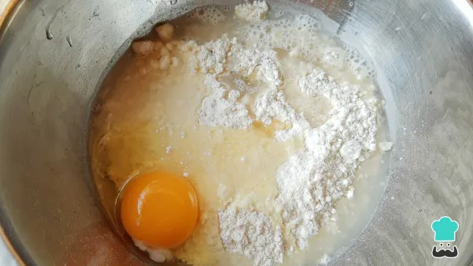
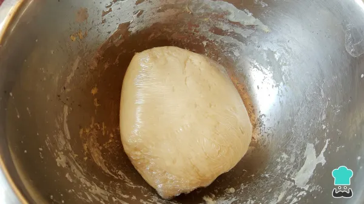
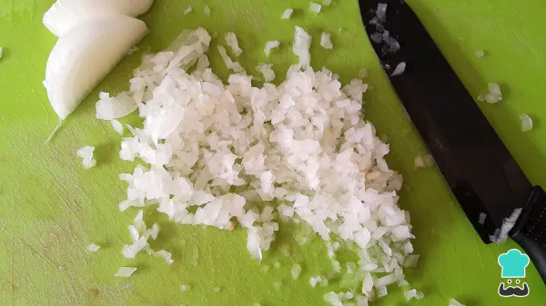
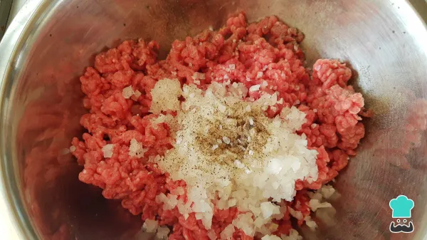
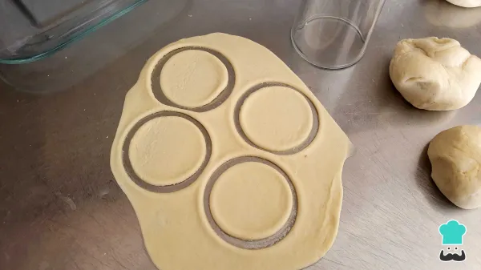
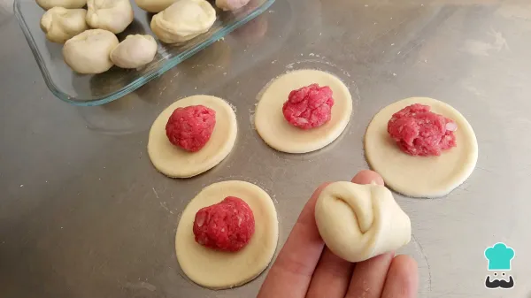
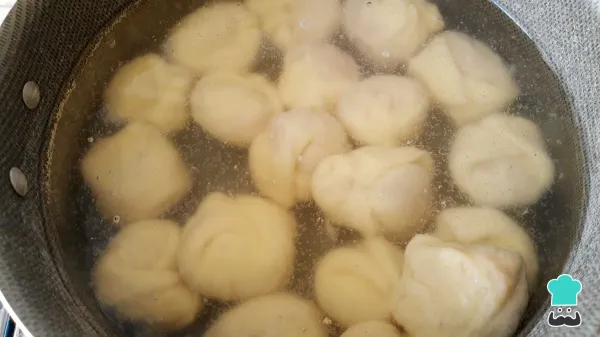
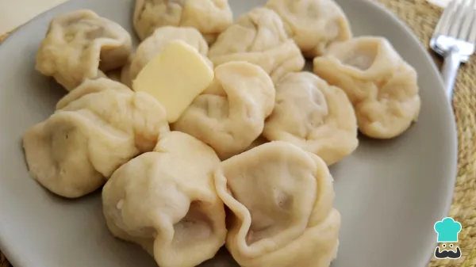

Empieza la receta fácil de pelmeni colocando en un bol la harina cernida, una pizca de sal, un huevo, media taza de agua fría y 2 cucharadas de aceite, mezcla muy bien con tus manos o con una batidora hasta conseguir una masa suave sin grumos.
Truco: si notas la masa muy seca añade solo un poco más de agua, debe quedar elástica y no pegajosa.

Después de amasar mínimo 10 minutos, cubre la masa con papel film y deja reposar en el refrigerador por un mínimo de 20 minutos.

Mientras reposa la masa prepara el relleno. Primero debes picar finamente la cebolla, debe quedar lo más fina posible, puedes pasarla por un procesador de alimentos o por la licuadora.

Después mezcla la cebolla con la carne molida, una pizca de sal y un poco de pimienta en polvo, luego reserva.
<

Cuando la masa haya reposado, divídela en unas 3 o 4 porciones para que sea más fácil estirarla. Empieza a extenderla con la ayuda de un rodillo hasta obtener un grosor de unos 2 a 3 mm, luego corta círculos de aproximadamente 5 cm con un cortador de galletas o con un vaso de cristal.

Luego rellena cada círculo con la carne molida y sazonada, debes dejar suficiente espacio para poder doblar la masa y juntar las orillas, repite el proceso hasta terminar con toda la masa. Luego pasa a un recipiente y lleva al congelador por un mínimo de 30 minutos. ¡Ya casi está la receta casera de pelmeni!

Cuando haya pasado el tiempo en el congelador, es momento de cocinar el pelmeni en una olla con agua hirviendo durante unos 10-15 minutos.

Cuando esté listo, escurre el agua y sirve, puedes acompañar con mantequilla o con crema. ¡A comer esta receta de pelmeni ruso!

si quieres probar palmenis caceros echos por un experto ruso, aqui te dejo la direccion
Anímate a preparar esta receta en casa y trae contigo un pedacito de Rusia con este platillo tan popular, además no solo puedes rellenar con carne, también puedes probar con rellenos de queso o vegetales. Y si te resulta complicado formar cada pelmeni, puedes optar por estirar toda la masa hasta llegar al grosor deseado, luego marca los círculos ligeramente, coloca la carne, cubre con otra parte de masa y con un cortador corta cada porción, al final solo presiona las orillas bien y realiza el doblez. El proceso lleva su tiempo por el reposo que se le debe proporcionar a la masa, pero te aseguro que el resultado te va a encantar.